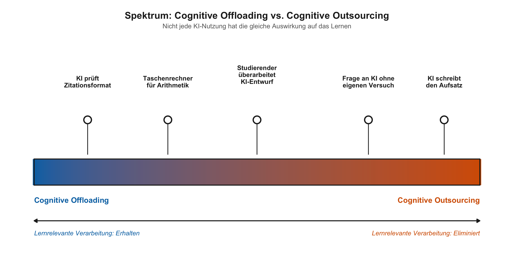

KI & Lernen
Was bedeuten die Erkenntnisse aus der Lernforschung für den Einsatz von KI in der Lehre? In diesem Teil wenden wir die kognitive Architektur auf die zentrale Frage an: Wann unterstützt KI das Lernen, und wann verhindert sie es?
Active-processingGedächtnis-Aktivierung (5 Min)
Bevor wir weitergehen: Schreibe 3 zentrale Konzepte aus Teil 1 auf, ohne Notizen. Ergänze bei jedem Konzept in einem Satz, warum es für den KI-Einsatz in der Lehre relevant ist.
Lücken sind willkommen: Sie zeigen dir, wo du beim Weiterhören besonders aufmerksam sein kannst.
Dann (2 Min): Vergleicht zu zweit eure Konzepte. Wo sind die grössten Unterschiede? Was war überraschend schwierig zu erinnern?
Diese Übung demonstriert genau das Prinzip, das sie testet: Abrufpraxis nach einer Verzögerung. Dass es sich anstrengend anfühlt, signalisiert, dass Abrufprozesse aktiv sind, und genau diese Prozesse festigen das Gelernte.
Was bedeutet das für KI?
FacilitatorSlides und Übergang zum Worked Example (ca. 10 Min)
Präsentiere die Slides. Kernbotschaften: Offloading vs. Outsourcing, Evaluationsparadox, Lernen ≠ Leisten, 5 Leitfragen mit den vier Operationen (Abrufen, Generieren, Verknüpfen, Überwachen), 3 Diagnose-Fragen. Die Diagnose-Fragen sind in den Slides enthalten. Nach den Slides die Aktivität (unten) durchführen, dann direkt zum Worked Example übergehen.
Wie erkennt man, wo auf dem Spektrum man steht?
Die 5 Leitfragen helfen beim Gestalten von Aufgaben. Aber wie prüft man im Lehralltag, ob das Denken tatsächlich bei den Studierenden geblieben ist? Drei Diagnose-Fragen, die den Versuch-dann-Prüfe-Bogen abbilden:
| Zeitpunkt | Frage an Studierende | Was sie zeigt |
|---|---|---|
| Vorher | “Was hast du versucht, bevor du KI gefragt hast?” | Gab es einen eigenen Versuch? |
| Während | “Wo hat dich die KI überrascht, und warum?” | War das interne Modell aktiv? |
| Nachher | “Was machst du nächstes Mal anders, ohne KI?” | Hat sich das Verständnis aktualisiert? |
Wer outsourct, hat auf Frage 2 keine Antwort: Es gab keine spezifischen Erwartungen, die überrascht werden konnten. Wer das Denken selbst geleistet hat, kann konkrete Überraschungsmomente benennen. → Ausführliche Anleitung mit Beispielen
PairDie 3 Diagnose-Fragen ausprobieren (1 Min)
Wähle eine der 3 Fragen. Wie würdest du sie in deiner Lehre konkret einsetzen? Formuliere eine Beispielfrage für dein Fach und tausche sie mit deinem Nachbarn aus.
Active-processingDas Evaluationsparadox erleben (1 Min)
Der folgende Absatz enthält einen sachlich falschen Satz. Welcher?
Der p-Wert ist eines der meistverwendeten und meistmissverstandenen Konzepte der empirischen Forschung. Er gibt die Wahrscheinlichkeit an, die beobachteten Daten (oder extremere) zu erhalten, unter der Annahme, dass die Nullhypothese zutrifft. Ein häufig übersehenes Problem: Statistische Signifikanz hängt stark von der Stichprobengrösse ab. Mit genügend grossen Stichproben wird praktisch jeder noch so kleine Effekt signifikant. Umgekehrt gilt: Je kleiner die Stichprobe, desto grösser muss der beobachtete Effekt sein, um Signifikanz zu erreichen, weshalb kleine Studien die tatsächliche Effektgrösse tendenziell unterschätzen.
Pro-tipDie Pointe: Evaluationsparadox
Der Fehler: “…weshalb kleine Studien die tatsächliche Effektgrösse tendenziell unterschätzen.” Das Gegenteil ist richtig: Kleine Studien, die signifikante Ergebnisse liefern, überschätzen die Effektgrösse systematisch. Nur ungewöhnlich grosse beobachtete Effekte schaffen es in kleinen Stichproben über die Signifikanzschwelle, daher sind die publizierten Effekte inflationiert (Winner’s Curse).
Du hast den Fehler wahrscheinlich nicht gefunden, weil dir die Schemata in Statistik fehlen. Alles klingt fachlich, kohärent, plausibel, aber ohne unabhängige Bewertungskriterien gibt es keine Grundlage, Richtiges von Falschem zu unterscheiden. In deinem eigenen Fach hättest du einen vergleichbaren Fehler sofort erkannt.
Genau das ist das Evaluationsparadox: KI-Outputs kritisch bewerten zu können setzt die Fachkompetenz voraus, die Studierende erst aufbauen sollen.
Active-processingVorhersage vor der Analyse (1 Min)
Gleich analysieren wir gemeinsam eine typische Aufgabe (“Annotierte Bibliografie”). Bevor wir starten:
Schreibe in einem Satz auf: Was passiert, wenn ein Studierender die Aufgabe “Annotierte Bibliografie” mithilfe eines LLM löst, auch wenn er oder sie sehr gut prompten kann? Was liefert die KI, und was fehlt trotzdem?
Halte deine Vorhersage fest. Wir kommen darauf zurück.
FacilitatorWorked Example gemeinsam durchgehen (ca. 12 Min)
Dieses Beispiel Schritt für Schritt gemeinsam durcharbeiten. Jeden Schritt vorlesen oder zusammenfassen, dann kurz Reaktionen abfragen. Vor dem Redesign PAUSE für die Selbsterklärung (2 Min). Dann das Redesign zeigen und die drei Erkenntnisse besprechen.
Bevor ihr die Leitfragen auf eure eigenen Aufgaben anwendet, schauen wir uns gemeinsam an, wie eine Analyse Schritt für Schritt aussehen könnte.
Die Aufgabe: “Annotierte Bibliografie”
Studierende suchen 5 relevante Quellen zu einem vorgegebenen Thema, fassen jede in 150 Wörtern zusammen und verfassen eine einseitige Synthese zum aktuellen Forschungsstand.
Eine Aufgabe, die in vielen Disziplinen vorkommt, von Sozialarbeit über Wirtschaft bis Informatik.
Erster Schritt: Was sollen Studierende dabei lernen?
Zuerst die Lernziele. Was sollen Studierende bei dieser Aufgabe eigentlich lernen?
- Suchstrategie entwickeln: Wo und wie suchen? Welche Datenbanken, welche Begriffe, welche Eingrenzung?
- Quellenqualität beurteilen: Ist die Quelle relevant? Methodisch solide? Aktuell genug?
- Einzelne Quellen zusammenfassen: Das Kernargument in eigenen Worten extrahieren
- Über Quellen hinweg synthetisieren: Muster, Widersprüche und Lücken im Forschungsstand identifizieren
- Zitieren als intellektuelle Praxis: Verstehen, warum man zitiert (welche Behauptungen brauchen Belege? Auf welche Vorarbeiten stützt sich das eigene Argument?)
Was hier kein Lernziel ist: Formal korrekt zitieren (APA-Format, Seitenzahlen, Kursivierung). Das sind mechanische Konventionen, die Werkzeuge wie Zotero seit Jahren übernehmen. Die eigentliche intellektuelle Leistung beim Zitieren ist die Entscheidung, was zitiert wird und warum.
Analysieren wir die Aufgabe jetzt mit den 5 Leitfragen.
Schritt-für-Schritt-Analyse
HinweisFrage 1: Geht es primär ums Lernen?
Ja. Es ist eine Kursaufgabe, kein professionelles Produkt. Die kognitive Arbeit muss bei den Studierenden bleiben.
HinweisFrage 2: Welche Denkarbeit verlangt die Aufgabe?
- Abrufen: Suchstrategie aus dem Gedächtnis aktivieren (welche Datenbanken? welche Suchbegriffe? welche Eingrenzungskriterien?)
- Generieren: Für jede Quelle eine eigene Zusammenfassung und Bewertung produzieren. Zusammenfassen (Kernargument in eigenen Worten extrahieren) und Bewerten (Qualität beurteilen) sind zwei verschiedene Anforderungen, die beide eigene kognitive Arbeit verlangen
- Verknüpfen: Quellen zu einer Synthese integrieren (hohe Elementinteraktivität: mehrere Argumente, Methoden und Befunde gleichzeitig in Beziehung setzen). Dazu gehört auch die intellektuelle Seite des Zitierens: entscheiden, welche Behauptungen Belege brauchen und welche Vorarbeiten das eigene Argument stützen
- Überwachen: Eigene Bewertungskriterien hinterfragen, Vollständigkeit der Recherche prüfen
HinweisFrage 3: Welche dieser Operationen würde KI übernehmen?
- Generieren wird vollständig übernommen: KI liefert fertige Zusammenfassungen und plausible Bewertungen.
- Auch das Verknüpfen übernimmt die KI komplett. Sie produziert kohärente Synthesen und setzt Zitationen. Aber KI behandelt Zitieren als Formatierungsaufgabe (welche Quelle passt formal hierhin?), nicht als intellektuelle Entscheidung (welche Behauptung in meinem Argument braucht einen Beleg, und warum gerade diese Quelle?).
- Eine eigene Suchstrategie (Abrufen) entwickeln Studierende gar nicht erst.
- Und Überwachen? Ohne eigene Bewertungskriterien fehlt der Massstab (Evaluationsparadox).
Die kognitive Arbeit steckt nicht im Produkt (Zusammenfassungen, Synthese, formal korrekte Zitationen), sondern im Prozess (Suchen, Bewerten, Entscheiden, intellektuell Verorten). Die aktuelle Aufgabe prüft das Produkt, und genau das kann KI liefern.
HinweisFrage 4: Werden noch Grundlagen aufgebaut?
Ja. Studierende lernen erst, wie man Quellen bewertet. Sie haben noch keine Schemata für: “Ist diese Quelle relevant? Methodisch solide? Aktuell genug?” Genau die Operationen, die wir identifiziert haben, vor allem Generieren und Verknüpfen, sind die Prozesse, durch die diese Schemata entstehen.
HinweisFrage 5: Arbeiten Studierende zuerst selbst, bevor KI ins Spiel kommt?
Nein. Es gibt keine eingebaute Phase, in der Studierende zuerst selbst suchen, bewerten und synthetisieren, bevor sie KI konsultieren.
WichtigDie Diagnose
Alle vier Kernoperationen werden von KI übernommen. Das Lernen wird nicht unterstützt, sondern umgangen.
Active-processingSelbsterklärung (2 Min)
Bevor ihr das Redesign seht: Notiert basierend auf der Diagnose, wie würdet ihr diese Aufgabe umgestalten? Was müsste sich ändern, damit der Denkprozess geschützt ist?
Eigene Ideen zu generieren, bevor man eine Lösung sieht, ist informativer als passive Rezeption. Dasselbe Prinzip, das wir gerade besprochen haben.
HinweisEin mögliches Redesign
| Phase | Studierende | KI |
|---|---|---|
| 1. Suchprotokoll | Suchstrategie dokumentieren | Keine |
| 2. Bewertungsnotizen | Quellen bewerten, Zitiergründe festhalten | Keine |
| 3. Synthese (vor Ort) | Einseitige Synthese, nur eigene Notizen | Keine |
| 3b. KI-Vergleich | Unterschiede zur KI-Synthese erklären | Vergleichsreferenz |
| 4. Formale Prüfung | Zitationsformat und Sprache prüfen | Offloading |
Was sich ändert: Die Studierenden müssen den Prozess durchlaufen. Das Produkt allein reicht nicht mehr, denn die Denkarbeit wird sichtbar und geschützt.
Phase 1 dokumentiert die Suchstrategie: Welche Datenbanken? Welche Begriffe? Warum diese Eingrenzung? Phase 2 verlangt für jede Quelle: Warum aufgenommen oder verworfen? Was ist das Kernargument? Welche eigene Behauptung stützt diese Quelle? Damit wird die intellektuelle Zitierentscheidung bei den Studierenden verankert. Phase 3 schützt die Synthese als den Schritt mit der höchsten Elementinteraktivität. Für echte Anfänger kann eine offene Synthese das Arbeitsgedächtnis überfordern. Eine vorgegebene Struktur (“Quellen A und B stimmen überein, dass . Sie unterscheiden sich bei , weil ___.”) bewahrt die relationale Verarbeitung, reduziert aber die extrinsische Last. Hier greift Leitfrage 4: Wer noch Grundlagen aufbaut, braucht mehr Gerüst. Phase 3b aktiviert Überwachen: Studierende vergleichen nach eigenem Versuch. Ohne eigene Synthese gibt es nichts, woran Unterschiede sichtbar werden. Vorsicht: Anfänger könnten ihre eigene Synthese in Richtung der KI-Version “korrigieren” (Evaluationsparadox). Deshalb lautet die Aufgabe “Unterschiede identifizieren und erklären”, nicht “Synthese verbessern”. Phase 4 delegiert nur noch Formatierung. Die inhaltliche Entscheidung wurde in Phase 2 getroffen.
Was zeigt dieses Beispiel?
TippLernziele zuerst, dann Operationen
Die Analyse beginnt mit “Was sollen Studierende lernen?”, nicht mit “Kann KI das?” Erst wenn die Lernziele klar sind, lassen sich die kognitiven Operationen identifizieren, die sie tragen. Das Redesign schützt gezielt diese Operationen und delegiert Routineanteile.
TippOffloading am richtigen Punkt
Was wir “Zitieren” nennen, bündelt zwei verschiedene Aktivitäten mit sehr unterschiedlichem kognitivem Profil: die inhaltliche Entscheidung (was und warum) und die formale Umsetzung (APA-Format). Die erste ist lernrelevant, die zweite nicht. Dasselbe gilt für die Synthese: Ihre hohe Elementinteraktivität macht sie besonders schützenswert, weil genau dieser Prozess die Schemata aufbaut, die Studierende später brauchen.
TippErst selbst, dann KI
Die eigene Synthese (Phase 3) aktiviert Abrufen und Generieren. Der Vergleich mit der KI-Synthese (Phase 3b) aktiviert Verknüpfen und Überwachen, weil Studierende Unterschiede zwischen ihrer eigenen Argumentation und der KI-Version erklären müssen. Dieses Prinzip ist theoretisch gut fundiert (vgl. Bjork und Bjork 2011), aber die empirische Forschung zur spezifischen Anwendung mit KI-Tools ist noch in einem frühen Stadium.
Active-processingRückkehr zur Vorhersage (1 Min)
Schau dir deine Vorhersage von vorhin an: Was passiert, wenn ein Studierender den Aufgabentext als Prompt eingibt?
Vergleiche: Wo lag deine Vorhersage richtig? Wo hast du etwas über- oder unterschätzt?
Wo deine Vorhersage nicht stimmte, hat dein internes Modell ein Update bekommen. Ohne eigene Vorhersage hättest du die Analyse nur passiv gelesen. Dasselbe Prinzip steckt hinter “Versuch-dann-Prüfe”.
Active-processingGedächtnis-Aktivierung (1 Min)
Bevor wir weitergehen, notiere in Stichworten:
- Was ist der Unterschied zwischen Offloading und Outsourcing?
- Was ist das Evaluationsparadox in einem Satz?
Du hast beides gerade im Worked Example gesehen. Wenn du es jetzt abrufen kannst, bleibt es haften.
TippÜberleitung zur Praxis
Im Worked Example habt ihr gesehen, wie die 5 Leitfragen eine Aufgabe Schritt für Schritt analysieren. Jetzt wendet ihr dasselbe auf eure eigene Aufgabe an. Danach diagnostiziert ihr das Redesign einer Kollegin oder eines Kollegen. Am Ende von Teil 3 habt ihr eine konkrete Analyse eurer eigenen Aufgabe, eine Peer-Diagnose eures Redesigns und einen Redesign-Plan, den ihr sofort umsetzen könnt.
Die folgenden Abschnitte vertiefen die Konzepte aus den Slides. Sie sind als Nachlese-Material für das Selbststudium gedacht.
NachlesenOffloading vs. Outsourcing
Die Slides behandeln Offloading und Outsourcing als Kernunterscheidung. Hier die vertiefte Erklärung mit Beispielen und Visualisierung.
Was hier zählt, ist eine einzige Frage: Wie aktiv ist das interne Modell der Lernenden, wenn sie KI-Output begegnen?
Offloading und Outsourcing markieren die Endpunkte eines Spektrums:
| Cognitive Offloading | Cognitive Outsourcing | |
|---|---|---|
| Definition | Tool reduziert Arbeitsgedächtnis-Last, während die Person denkt | Tool übernimmt das Denken |
| Beispiel | Taschenrechner bei Problemlösung | KI schreibt den Aufsatz |
| Lernrelevante Verarbeitung | Bleibt erhalten | Wird eliminiert |
| Expertise-Entwicklung | Wird unterstützt | Wird verhindert |
Die interessanten und schwierigen Fälle liegen in der Mitte: Ein Student, der einen KI-generierten Entwurf gründlich überarbeitet; eine Studierende, die nach eigenem Versuch gezielt eine Frage an die KI stellt. Die entscheidende Variable ist nicht, ob KI genutzt wird, sondern wie viel eigene Denkarbeit die Lernenden geleistet haben, bevor sie dem KI-Output begegnen. Je aktiver das interne Modell, desto informativer das Feedback.
Dabei gilt ein oft übersehener Punkt: Dieselbe Aktivität kann für eine Studierende Offloading und für eine andere Outsourcing sein. Eine fortgeschrittene Studierende, die einen KI-Entwurf kritisch überarbeitet, hat die Schemata, um Fehler zu erkennen und strukturelle Schwächen zu identifizieren. Für sie ist die Überarbeitung echte kognitive Arbeit. Eine Anfängerin, der dieselben Schemata fehlen, übernimmt den Entwurf mit kosmetischen Änderungen, weil sie gar nicht erkennen kann, was fehlt. Ob eine KI-Nutzung Offloading oder Outsourcing ist, hängt also nicht nur von der Aufgabengestaltung ab, sondern auch vom Vorwissen der Studierenden. Das ist die direkte Konsequenz des Expertise Reversal Effect auf das Offloading-Outsourcing-Spektrum.
Outsourcing eliminiert die lernrelevante kognitive Verarbeitung (Schemabildung, Abruf, Elaboration). Das ist das Kernproblem.
Erinnere dich an die Unterscheidung zwischen biologisch primärem und sekundärem Wissen aus Teil 1: Akademische Kompetenzen (Lesen, Schreiben, fachliches Denken) sind biologisch sekundär. Sie erfordern bewusste, aktive Verarbeitung. Outsourcing umgeht genau die Prozesse, die für diesen Erwerb nötig sind.
Viele KI-Policies scheitern, weil sie diese Unterscheidung nicht machen. Die Frage ist nicht “Dürfen Studierende KI nutzen?”, sondern “Wird das Denken ausgelagert oder nur unterstützt?” Hier braucht es das Urteil der Lehrperson.

NachlesenDas Evaluationsparadox
Ein verbreiteter Vorschlag: “Studierende müssen lernen, KI-Outputs kritisch zu bewerten.”
Das Problem: Um KI-Outputs beurteilen zu können, braucht man genau die Fachkompetenz, die das Lernen erst entwickeln soll. Evaluation ist selbst eine Form von Inferenz. Man muss das eigene interne Modell aktivieren und prüfen, ob der KI-Output damit konsistent ist. Ohne hinreichend entwickeltes Modell fehlt die Grundlage für diese Prüfung.
- Expert:innen haben unabhängige Bewertungskriterien und erkennen Fehler sofort
- Anfänger:innen fehlen diese Kriterien, sodass “kritische Bewertung” zu oberflächlichem Prüfen wird
Die Konsequenz: Kompetente Nutzung setzt Kompetenz voraus.
Die Expert:innen-Anfänger:innen-Asymmetrie aus Teil 1 wirkt hier direkt: Expert:innen können KI als Verstärker nutzen. Anfänger:innen riskieren dauerhafte Abhängigkeit.
Wichtige Differenzierung: Das Paradox ist nicht absolut, sondern variiert mit dem Kompetenzniveau. Für echte Anfänger:innen ist es am gravierendsten; fortgeschrittene Studierende mit Grundlagenwissen können bereits grobe Fehler, logische Inkonsistenzen oder fehlende Belege erkennen. Auch können strukturierte Evaluationsaufgaben (z.B. zwei KI-Outputs vergleichen, spezifische Behauptungen gegen Primärquellen prüfen) das Paradox teilweise abmildern, ohne es aufzulösen.
NachlesenSchemata, Lernen ≠ Leisten und der “Strand”
Warum Schemata den KI-Output umschreiben
Gedächtnis ist nicht reproduktiv, sondern rekonstruktiv. Wenn Studierende sich an etwas erinnern, spielen sie keine Aufnahme ab; sie rekonstruieren aus Fragmenten, ergänzt durch Vorwissen und aktuelle Überzeugungen. Schemata, also organisierte Wissensstrukturen aus Erfahrung, sind dabei Vorteil und Fehlerquelle zugleich.
Für die KI-Nutzung bedeutet das: Wenn Studierende KI-Output lesen, wird dieser durch ihre bestehenden Schemata gefiltert und oft still an Erwartungen angepasst. Korrekte Information, die zum Schema passt, wird gut behalten. Korrekte Information, die dem Schema widerspricht, wird schlecht behalten oder uminterpretiert. Und Schema-konsistente Details werden manchmal hinzufabriziert, obwohl sie nie da waren.
Das erklärt auch, warum Missverständnisse so hartnäckig sind: Einfach korrekte Information zu präsentieren reicht nicht, weil das bestehende Schema die neue Information umschreibt. Stattdessen braucht es den Dreischritt: Aktivieren (Missverständnis explizit machen) → Konflikt (Evidenz zeigen, die das Missverständnis nicht erklären kann) → Auflösen (korrekte Erklärung im Kontrast zum Missverständnis).
Vertiefung: Gedächtnis und Lernen. Rekonstruktives Gedächtnis, Schemata, und warum Abruf Lernen erzeugt
Lernen ≠ Leisten
Studierende können mit KI korrekte Ergebnisse produzieren (leisten), ohne etwas gelernt zu haben. Und das Problem geht tiefer: Wer die Denkarbeit auslagert, baut nicht nur dieses Wissen nicht auf, sondern es fehlt auch die Grundlage, die Wissenstransfer auf neue Situationen ermöglicht. Ohne gut organisierte, tiefe Wissensstrukturen gibt es nichts, was transferiert werden könnte.
Transfer ist das eigentliche Versprechen von Hochschulbildung: Studierende sollen Gelerntes in Situationen anwenden können, die sie im Studium nie gesehen haben. Wenn Outsourcing die Schemabildung verhindert, wird genau dieses Versprechen gebrochen.
Schein-Kompetenz
Studierende produzieren Texte mit allen Oberflächenmerkmalen akademischer Arbeit (Hedging, Zitationen, Fachvokabular), ohne die zugrundeliegende intellektuelle Arbeit. Das Phänomen ist nicht neu: Studierende haben schon vor KI mit Copy-Paste, strategischem Zusammenfassen und oberflächlichem Paraphrasieren akademische Fassaden errichtet. KI macht es nur einfacher und die Fassade überzeugender. Die kognitionspsychologische Vorhersage: Schein-Kompetenz wird tückischer als strategisches Abkürzen, weil sie zur Selbsttäuschung werden kann. Das rekonstruktive Gedächtnis kann plausible Erinnerungen an einen Denkprozess erzeugen, der nie stattfand. Ob und wie oft dieses Risiko tatsächlich eintritt, wird die empirische Forschung zeigen müssen. Aber der Mechanismus (rekonstruktives Gedächtnis + oberflächliche Verarbeitung) ist gut belegt und legt nahe, dass das Risiko real ist.
“The Beach, Not the Ant”
Die Lernumgebung bestimmt das Ergebnis mehr als die Motivation der Studierenden.
Herbert Simon beobachtete: Eine Ameise läuft einen komplexen, gewundenen Pfad am Strand entlang. Aber die Komplexität liegt nicht in der Ameise, denn sie folgt einfachen Regeln. Die Komplexität liegt im Strand: in den Hindernissen, Steigungen und Barrieren.
Übertragen auf Lernen: Wenn Studierende den einfachsten Weg nehmen (KI das Denken übernehmen lassen), ist das keine Charakterschwäche. Es ist rationales Verhalten in einer Umgebung, die diesen Weg ermöglicht.
Die richtige Frage ist nicht “Wie verhindern wir, dass Studierende schummeln?” sondern “Wie gestalten wir Umgebungen, in denen produktive Anstrengung der natürliche Weg ist?”
Herbert Simon nannte das zugrundeliegende Prinzip Bounded Rationality (begrenzte Rationalität): Menschen treffen Entscheidungen nicht durch Optimierung aller Möglichkeiten, sondern indem sie die erste akzeptable Lösung wählen (Satisficing). Wenn die Lernumgebung eine akzeptable Lösung ohne kognitive Anstrengung zulässt, werden begrenzt rationale Studierende diese Lösung wählen. Die Konsequenz für die Aufgabengestaltung: Wir müssen Aufgaben so entwerfen, dass die “befriedigende” Lösung die kognitive Anstrengung einschliesst, nicht umgeht.
Ungleiche Wirkung
Der Expertise Reversal Effect hat eine direkte Konsequenz für die Gerechtigkeit: Wenn das, was Novizen hilft, sich von dem unterscheidet, was Experten hilft, dann schadet unstrukturierter KI-Einsatz Studierenden mit schwächerem Vorwissen überproportional. Das ist keine empirische Spekulation, sondern eine logische Folge der Theorie, die wir bereits besprochen haben:
- Stärkere Studierende haben kompensatorisches Vorwissen und können KI-Outputs besser einordnen
- Schwächere Studierende werden am meisten geschädigt, weil ihnen genau die Grundlage fehlt, die eine kritische Nutzung erfordern würde
- KI-Policy ist auch eine pädagogische Gerechtigkeitsfrage, nicht bloss eine Frage der akademischen Integrität
Die empirische Evidenzbasis zu KI-spezifischen ungleichen Wirkungen wächst, und die Richtung ist konsistent mit dem “digitalen Matthäus-Effekt” aus der Bildungstechnologie-Forschung (Reich 2020): Technologie ohne starke pädagogische Rahmung verstärkt bestehende Unterschiede.
Was lässt sich dagegen tun?
- Differenziertes Scaffolding in der Versuch-Phase: Versuch-dann-Prüfe setzt voraus, dass Studierende genug Vorwissen haben, um einen sinnvollen Versuch zu generieren. Für Studierende mit schwachem Vorwissen kann es nötig sein, vor dem eigenen Versuch ein ausgearbeitetes Beispiel zu studieren (der Worked Example Effect aus der Cognitive Load Theory). Der nächste Schritt wäre ein teilweise bearbeitetes Problem zum Vervollständigen (Completion Problem), bevor der freie Versuch möglich wird
- Strategische Paarung in der Prüfe-Phase: Bewusste Zusammensetzung von Tandems, die unterschiedliche Stärken einbringen, damit die Vergleichsphase für alle informativ ist
- Sprachliche Zugänglichkeit beachten: KI-Tools funktionieren in verschiedenen Sprachen unterschiedlich gut. Für nicht-muttersprachliche Studierende kann die Sprachbarriere die ohnehin schwächere Ausgangsposition verschärfen
Was uns die Geschichte der Bildungstechnologie lehrt
Die Herausforderungen, die wir hier beschreiben (kognitives Outsourcing, Schein-Kompetenz, Gerechtigkeitslücken), sind nicht neu. Sie sind die jüngste Ausprägung eines wiederkehrenden Musters: Jede Welle von Bildungstechnologie wurde von Transformationsversprechen begleitet und dann von bestehenden Praktiken domestiziert.
Computer in Schulen sollten in den 1980er Jahren das Lernen revolutionieren. Intelligente Tutoring-Systeme zeigten in den 1990er Jahren vielversprechende Ergebnisse in kontrollierten Studien, scheiterten aber an der Skalierung. MOOCs versprachen 2012 den Zugang zu Bildung zu demokratisieren und produzierten stattdessen Matthäus-Effekte (Reich 2020). Learning Management Systeme wurden zu digitalen Aktenschränken.
Dieses Muster ist kein Scheitern, sondern die Art, wie Institutionen neue Werkzeuge sinnvoll integrieren (Reich 2020). Die angemessene Reaktion auf KI ist weder unkritische Begeisterung noch pauschale Ablehnung, sondern informierte, kontextbezogene Integration, genau das, was diese Leitfragen ermöglichen sollen.
NachlesenDie 5 Leitfragen (Übersicht)
Ein praktisches Werkzeug für die Aufgabengestaltung:
| Frage | Ergebnis |
|---|---|
| 1. Geht es primär ums Lernen? | → Kognitive Arbeit schützen |
| 2. Welche Denkarbeit verlangt die Aufgabe? | → Operationen identifizieren (Abrufen, Generieren, Verknüpfen, Überwachen) |
| 3. Welche Operationen würde KI übernehmen? | → Lernrelevante Operationen schützen, Routineanteile delegierbar |
| 4. Werden noch Grundlagen aufgebaut? | → Studierende brauchen die Operationen selbst |
| 5. Arbeiten Studierende zuerst selbst? | → Reihenfolge einbauen: erst Versuch, dann KI |
Für das Selbststudium
- Arbeitsgedächtnis und Instruktion. Die vier Modelle des Arbeitsgedächtnisses und was sie für Lehrdesign bedeuten
- Gedächtnis und Lernen. Rekonstruktives Gedächtnis, Schemata, und warum Abruf Lernen erzeugt
- Wie man Kompetenzen erwirbt. Wissenschaftliche Grundlagen der Expertise-Entwicklung
- Produktive Anstrengung durch Design. Lernumgebungen gestalten, die Anstrengung zum natürlichen Weg machen
- The Curious Case of Transfer of Learning. Warum tiefes Wissen die Voraussetzung für Wissenstransfer ist (Shrestha, nach Haskell)
Literatur
Bjork, Elizabeth Ligon, und Robert A. Bjork. 2011. „Making Things Hard on Yourself, but in a Good Way: Creating Desirable Difficulties to Enhance Learning“. In Psychology and the Real World: Essays Illustrating Fundamental Contributions to Society, 56–64. New York, NY, US: Worth Publishers.
Reich, Justin. 2020. Failure to Disrupt: Why Technology Alone Can’t Transform Education. Cambridge London: Harvard University Press.